主要负责协议，和服务连接创建和销毁，发起和引用。
Protocol接口的继承关系见下图：
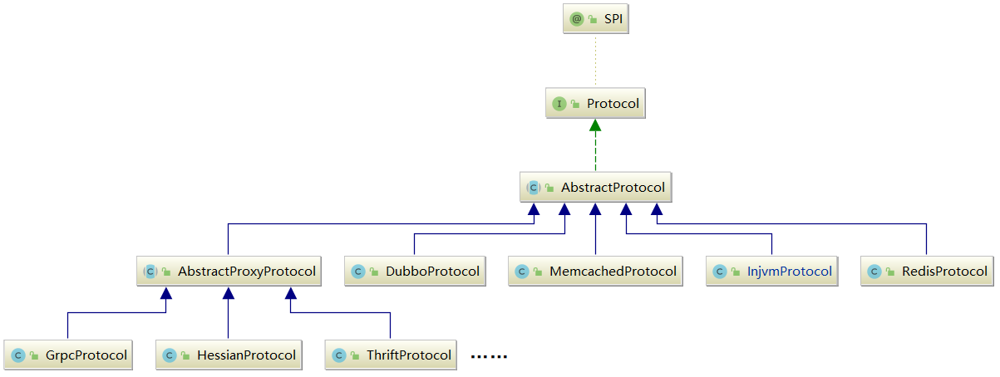
Protocol是对“协议”的抽象，它的核心是export()——暴露服务，以及refer()引用服务这两个方法：
x1// Protocol.java2
3("dubbo")4public interface Protocol {5
6 /**7 * 默认端口8 */9 int getDefaultPort();10
11 /**12 * 将一个Invoker暴露出去，export()方法实现需要是幂等的，即同一个服务暴露多次和暴露一次的效果是相同的13 */14 15 <T> Exporter<T> export(Invoker<T> invoker) throws RpcException;16
17 /**18 * 引用一个Invoker，refer()方法会根据参数返回一个Invoker对象，19 * Consumer端可以通过这个Invoker请求Provider端的服务20 */21 22 <T> Invoker<T> refer(Class<T> type, URL url) throws RpcException;23
24 /**25 * 销毁export()方法以及refer()方法使用到的Invoker对象，释放当前Protocol对象底层占用的资源26 */27 void destroy();28
29 /**30 * 返回当前Protocol底层的全部ProtocolServer31 */32 default List<ProtocolServer> getServers() {33 return Collections.emptyList();34 }35}AbstractProtocol 提供了一些 Protocol 实现需要的公共能力及公共字段：
核心字段：
171// AbstractProtocol.java2
3public abstract class AbstractProtocol implements Protocol {4
5 // 用于存储暴露的服务集合6 // Key是通过ProtocolUtils.serviceKey()方法创建的服务标识7 protected final Map<String, Exporter<?>> exporterMap = new ConcurrentHashMap<String, Exporter<?>>();8
9 // 缓存所有ProtocolServer实例10 // Key是host和port组成的字符串，Value是监听该地址的ProtocolServer11 protected final Map<String, ProtocolServer> serverMap = new ConcurrentHashMap<>();12
13 // 服务引用的集合14 protected final Set<Invoker<?>> invokers = new ConcurrentHashSet<Invoker<?>>();15
16 //...17}
exporterMap：用于缓存暴露的服务集合，其中的 Key 是服务的唯一标识，通过ProtocolUtils.serviceKey()方法创建，结果是一个<服务全限定名>:<服务版本号>:<服务端口>的字符串：201// ProtocolUtils.java2public class ProtocolUtils {4private static final ConcurrentMap<String, GroupServiceKeyCache> groupServiceKeyCacheMap = new ConcurrentHashMap<>();6private ProtocolUtils() {8}9public static String serviceKey(int port, String serviceName, String serviceVersion, String serviceGroup) {11serviceGroup = serviceGroup == null ? "" : serviceGroup;12GroupServiceKeyCache groupServiceKeyCache = groupServiceKeyCacheMap.get(serviceGroup);13if (groupServiceKeyCache == null) {14groupServiceKeyCacheMap.putIfAbsent(serviceGroup, new GroupServiceKeyCache(serviceGroup));15groupServiceKeyCache = groupServiceKeyCacheMap.get(serviceGroup);16}17return groupServiceKeyCache.getServiceKey(serviceName, serviceVersion, port);18}19//...20}
ProtocolUtils内部有一个
groupServiceKeyCacheMap字段，是一个ConcurrentHashMap：
Key是
serviceGroup，在实践中我们可以根据需求设置 group，例如，按照机房、地域等进行 group 划分，做到就近调用；Value是
GroupServiceKeyCache对象，它的内部也包含一个Map——ConcurrentMap<serviceName, ConcurrentMap<serviceVersion, ConcurrentMap<port, String>>>，结构如下图。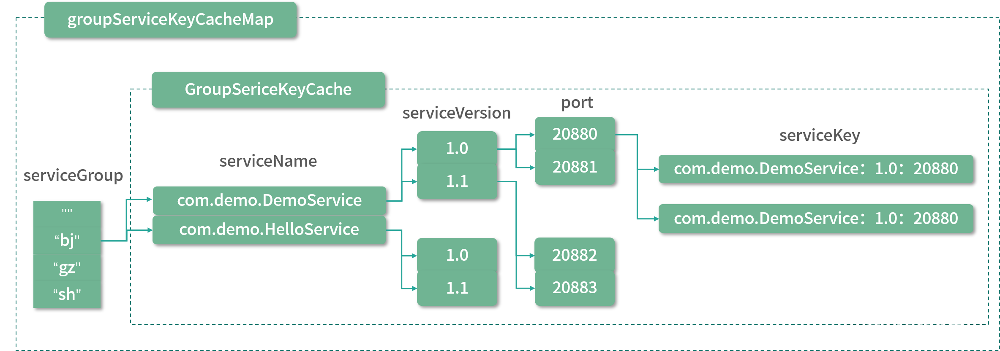
方法实现：AbstractProtocol 没有对 Protocol.export() 方法进行实现，refer() 方法的实现也仅仅是委托给了 protocolBindingRefer() 这个抽象方法，由子类实现：
81// AbstractProtocol.java2
3public <T> Invoker<T> refer(Class<T> type, URL url) throws RpcException {5 return new AsyncToSyncInvoker<>(protocolBindingRefer(type, url));6}7
8protected abstract <T> Invoker<T> protocolBindingRefer(Class<T> type, URL url) throws RpcException; AbstractProtocol 唯一实现的方法是 destory() 方法：
301// AbstractProtocol.java2
3protected final Map<String, Exporter<?>> exporterMap = new ConcurrentHashMap<String, Exporter<?>>();4protected final Set<Invoker<?>> invokers = new ConcurrentHashSet<Invoker<?>>();5
6public void destroy() {8 // 关闭全部的服务引用9 for (Invoker<?> invoker : invokers) {10 if (invoker != null) {11 invokers.remove(invoker);12 try {13 invoker.destroy();14 } catch (Throwable t) {15 logger.warn(t.getMessage(), t);16 }17 }18 }19 // 关闭暴露出去的服务20 for (String key : new ArrayList<String>(exporterMap.keySet())) {21 Exporter<?> exporter = exporterMap.remove(key);22 if (exporter != null) {23 try {24 exporter.unexport();25 } catch (Throwable t) {26 logger.warn(t.getMessage(), t);27 }28 }29 }30}继承了AbstractProtocol的子类。
export服务发布：
231// DubboProtocol.java2
3public <T> Exporter<T> export(Invoker<T> invoker) throws RpcException {5
6 // 1.创建ServiceKey7 URL url = invoker.getUrl();8 String key = serviceKey(url);9
10 // 2.将Invoker对象封装成DubboExporter对象，然后记录到exporterMap集合中11 DubboExporter<T> exporter = new DubboExporter<T>(invoker, key, exporterMap);12 exporterMap.put(key, exporter);13
14 //...15
16 // 3.启动ProtocolServer17 openServer(url);18
19 // 4.进行序列化的优化处理20 optimizeSerialization(url);21
22 return exporter;23}
DubboExporter：继承关系：
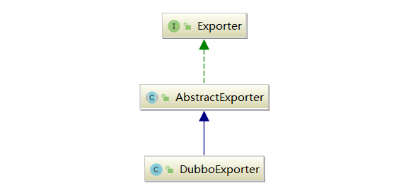
AbstractExporter 中维护了一个 Invoker 对象，以及一个 unexported 字段（boolean 类型），在 unexport() 方法中会设置 unexported 字段为 true，并调用 Invoker 对象的 destory() 方法进行销毁。
DubboExporter 比较简单，它会维护底层 Invoker 对应的 ServiceKey 以及 DubboProtocol 中的 exportMap 集合，在其 unexport() 方法中除了会调用父类 AbstractExporter 的 unexport() 方法之外，还会清理该 DubboExporter 实例在 exportMap 中相应的元素。
openServer：会一路调用Exchange层、Transport层，并最终创建 NettyServer 来接收客户端的请求：
281// DubboProtocol.java2private void openServer(URL url) {4// 获取host:port这个地址5String key = url.getAddress();6// 只有Server端才能启动Server对象7boolean isServer = url.getParameter(IS_SERVER_KEY, true);8if (isServer) {9ProtocolServer server = serverMap.get(key);10// 无ProtocolServer监听该地址11if (server == null) {12synchronized (this) { // DoubleCheck，防止并发问题13server = serverMap.get(key);14if (server == null) {15// 调用createServer()方法创建ProtocolServer对象16serverMap.put(key,17// ---往下看---18createServer(url)19// ---end---20);21}22}23} else {24// 如果已有ProtocolServer实例，则尝试根据URL信息重置ProtocolServer25server.reset(url);26}27}28}
createServer：首先会为 URL 添加一些默认值，同时会进行一些参数值的检测，最后通过 Exchangers 门面类创建 ExchangeServer，并封装成 DubboProtocolServer 返回：
371// DubboProtocol.java2private ProtocolServer createServer(URL url) {4url = URLBuilder.from(url)5// ReadOnly请求是否阻塞等待6.addParameterIfAbsent(CHANNEL_READONLYEVENT_SENT_KEY, Boolean.TRUE.toString())7// 心跳间隔8.addParameterIfAbsent(HEARTBEAT_KEY, String.valueOf(DEFAULT_HEARTBEAT))9.addParameter(CODEC_KEY, DubboCodec.NAME)10.build();11// 检测SERVER_KEY参数指定的Transporter扩展实现是否合法13String str = url.getParameter(SERVER_KEY, DEFAULT_REMOTING_SERVER);14if (str != null && str.length() > 0 && !ExtensionLoader.getExtensionLoader(Transporter.class).hasExtension(str)) {16throw new RpcException("Unsupported server type: " + str + ", url: " + url);17}18// 通过Exchangers门面类，创建ExchangeServer对象20ExchangeServer server;21try {22server = Exchangers.bind(url, requestHandler);23} catch (RemotingException e) {24throw new RpcException("Fail to start server(url: " + url + ") " + e.getMessage(), e);25}26str = url.getParameter(CLIENT_KEY);28if (str != null && str.length() > 0) {29Set<String> supportedTypes = ExtensionLoader.getExtensionLoader(Transporter.class).getSupportedExtensions();30if (!supportedTypes.contains(str)) {31throw new RpcException("Unsupported client type: " + str);32}33}34// 将ExchangeServer封装成DubboProtocolServer返回36return new DubboProtocolServer(server);37}序列化：完成 ProtocolServer 的启动之后，export() 方法最后会调用
optimizeSerialization()方法对指定的序列化算法进行优化。在使用某些序列化算法（例如， Kryo、FST 等）时，为了让其能发挥出最佳的性能，最好将那些需要被序列化的类提前注册到 Dubbo 系统中。
比如，我们可以通过一个实现了
SerializationOptimizer接口的优化器，并在配置中指定该优化器，如下示例代码：81public class SerializationOptimizerImpl implements SerializationOptimizer {2public Collection<Class> getSerializableClasses() {3List<Class> classes = new ArrayList<>();4// 添加需要被序列化的类5classes.add(xxxx.class);6return classes;7}8}
在
DubboProtocol.optimizeSerialization()方法中，就会获取该优化器中注册的类，通知底层的序列化算法进行优化，序列化的性能将会被大大提升。当然，在进行序列化的时候，难免会级联到很多 Java 内部的类（例如，数组、各种集合类型等），Kryo、FST 等序列化算法已经自动将JDK 中的常用类进行了注册，所以无须重复注册它们。331// DubboProtocol.java2private void optimizeSerialization(URL url) throws RpcException {4// 根据URL中的optimizer参数值，确定SerializationOptimizer接口的实现类5String className = url.getParameter(OPTIMIZER_KEY, "");6if (StringUtils.isEmpty(className) || optimizers.contains(className)) {7return;8}9try {10Class clazz = Thread.currentThread().getContextClassLoader().loadClass(className);11if (!SerializationOptimizer.class.isAssignableFrom(clazz)) {12throw new RpcException("The serialization optimizer " + className + " isn't an instance of " + SerializationOptimizer.class.getName());13}14// 创建SerializationOptimizer实现类的对象15SerializationOptimizer optimizer = (SerializationOptimizer) clazz.newInstance();16if (optimizer.getSerializableClasses() == null) {18return;19}20// 调用getSerializableClasses()方法获取需要注册的类22for (Class c : optimizer.getSerializableClasses()) {23SerializableClassRegistry.registerClass(c);24}25optimizers.add(className);26} catch (ClassNotFoundException e) {27throw new RpcException("Cannot find the serialization optimizer class: " + className, e);28} catch (InstantiationException e) {29throw new RpcException("Cannot instantiate the serialization optimizer class: " + className, e);30} catch (IllegalAccessException e) {31throw new RpcException("Cannot instantiate the serialization optimizer class: " + className, e);32}33}
refer服务引用： DubboProtocol 中引用服务的相关实现，具体定义在 protocolBindingRefer() 方法中：
151// DubboProtocol.java2
3public <T> Invoker<T> protocolBindingRefer(Class<T> serviceType, URL url) throws RpcException {5 // 1.进行序列化优化，注册需要优化的类6 optimizeSerialization(url);7
8 // 2.创建DubboInvoker对象9 DubboInvoker<T> invoker = new DubboInvoker<T>(serviceType, url, getClients(url), invokers);10
11 // 3.将DubboInvoker对象添加到invoker集合之中12 invokers.add(invoker);13
14 return invoker;15}
建立连接：先关注的是 getClients() 方法 ，它创建了底层发送请求和接收响应的 Client 集合，其核心分为了两个部分，一个是针对 共享连接 的处理，另一个是针对 独享连接 的处理，具体实现如下：
311// DubboProtocol.java2private ExchangeClient[] getClients(URL url) {4// 是否使用共享连接5boolean useShareConnect = false;6// CONNECTIONS_KEY参数值决定了后续建立连接的数量8int connections = url.getParameter(CONNECTIONS_KEY, 0);9List<ReferenceCountExchangeClient> shareClients = null;10// 如果没有连接数的相关配置，默认使用共享连接的方式11if (connections == 0) {12useShareConnect = true;13// 确定建立共享连接的条数，默认只建立一条共享连接14String shareConnectionsStr = url.getParameter(SHARE_CONNECTIONS_KEY, (String) null);15connections = Integer.parseInt(StringUtils.isBlank(shareConnectionsStr) ? ConfigUtils.getProperty(SHARE_CONNECTIONS_KEY, DEFAULT_SHARE_CONNECTIONS) : shareConnectionsStr);16// 创建公共ExchangeClient集合17shareClients = getSharedClient(url, connections);18}19// 整理要返回的ExchangeClient集合21ExchangeClient[] clients = new ExchangeClient[connections];22for (int i = 0; i < clients.length; i++) {23if (useShareConnect) {24clients[i] = shareClients.get(i);25} else {26// 不使用公共连接的情况下，会创建单独的ExchangeClient实例27clients[i] = initClient(url);28}29}30return clients;31}
当使用独享连接的时候，对每个 Service 建立固定数量的 Client，每个 Client 维护一个底层连接。如下图所示，就是针对每个 Service 都启动了两个独享连接：
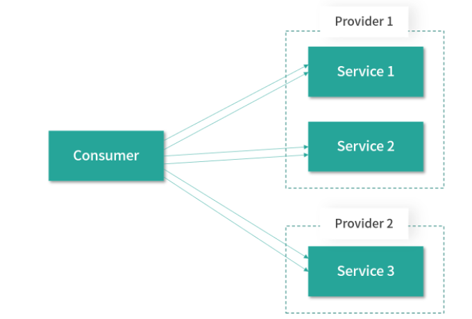
当使用共享连接的时候，区分不同的网络地址（host:port），一个地址只建立固定数量的共享连接。如下图所示，Provider 1 暴露了多个服务，Consumer 引用了 Provider 1 中的多个服务，共享连接是说 Consumer 调用 Provider 1 中的多个服务时，是通过固定数量的共享 TCP 长连接进行数据传输，这样就可以达到减少服务端连接数的目的：
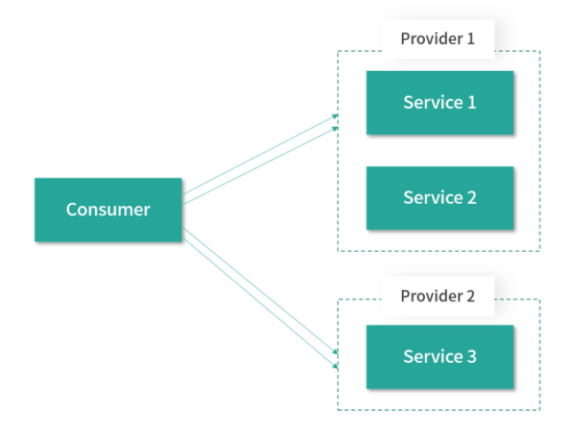
destroy方法：在 DubboProtocol 销毁的时候，会调用 destroy() 方法释放底层资源，其中就涉及 export 流程中创建的 ProtocolServer 对象以及 refer 流程中创建的 Client。
DubboProtocol.destroy() 方法会逐个关闭 serverMap 集合中的 ProtocolServer 对象：
301// DubboProtocol.java2
3public void destroy() {5 for (String key : new ArrayList<>(serverMap.keySet())) {6 ProtocolServer protocolServer = serverMap.remove(key);7 if (protocolServer == null) {8 continue;9 }10
11 RemotingServer server = protocolServer.getRemotingServer();12 try {13 // 发送ReadOnly请求、阻塞指定时间、关闭底层的定时任务、关闭相关线程池14 server.close(ConfigurationUtils.getServerShutdownTimeout());15 } catch (Throwable t) {16 logger.warn(t.getMessage(), t);17 }18 }19
20 for (String key : new ArrayList<>(referenceClientMap.keySet())) {21 List<ReferenceCountExchangeClient> clients = referenceClientMap.remove(key);22 if (CollectionUtils.isEmpty(clients)) {23 continue;24 }25 for (ReferenceCountExchangeClient client : clients) {26 closeReferenceCountExchangeClient(client);27 }28 }29 super.destroy();30}
重点介绍了 DubboProtocol 发布和引用 Dubbo 服务的核心流程，DubboProtocol 的源码和设计思路本身比较简单。
对于服务暴露：上层业务 Bean 会被封装成 Invoker 对象，然后传入 DubboProtocol.export() 方法中，Invoker 会被封装成 DubboExporter，并缓存到 exporterMap 集合中。在 DubboProtocol 暴露的 ProtocolServer 收到请求时，经过一系列解码处理，最终会到达 DubboProtocol.requestHandler 这个 ExchangeHandler 对象中，该 ExchangeHandler 对象会从 exporterMap 集合中取出 Invoker，并调用其 invoke() 方法处理请求；
对于服务引用：DubboProtocol.protocolBindingRefer() 方法会将底层的 ExchangeClient 集合封装成 DubboInvoker，然后由上层逻辑封装成代理对象，这样业务层就可以像调用本地 Bean 一样，完成远程调用。
对 Invoker 进行深入分析，其类继承图如下：
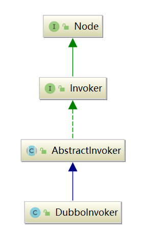
对Invoker的抽象。
核心字段：
181// AbstractInvoker.java2
3public abstract class AbstractInvoker<T> implements Invoker<T> {4 // 该 Invoker 对象封装的业务接口类型5 private final Class<T> type;6
7 // 当前 Invoker 关联的 URL 对象，其中包含了全部的配置信息8 private final URL url;9
10 // 当前 Invoker 关联的一些附加信息，这些附加信息可以来自关联的 URL11 private final Map<String, Object> attachment;12
13 // Invoker 的可用状态14 private volatile boolean available = true;15
16 // Invoker 的销毁状态17 private AtomicBoolean destroyed = new AtomicBoolean(false);18}invoke()实现：AbstractInvoker 实现了 Invoker 接口中的 invoke() 方法，采用了设计模式中的 模板方法模式 ：
首先，对 URL 中的配置信息以及 RpcContext 中携带的信息进行处理，添加到 Invocation 中作为附加信息；
然后，调用 doInvoke() 方法发起远程调用（该方法由 AbstractInvoker 的子类实现），最后得到 AsyncRpcResult 对象返回。
511// AbstractInvoker.java2
3public Result invoke(Invocation inv) throws RpcException {5 // 1.将传入的Invocation转换为RpcInvocation6 RpcInvocation invocation = (RpcInvocation) inv;7 invocation.setInvoker(this);8
9 // 2.将attachment集合添加为Invocation的附加信息10 if (CollectionUtils.isNotEmptyMap(attachment)) {11 invocation.addObjectAttachmentsIfAbsent(attachment);12 }13
14 // 3.将RpcContext的附加信息添加为Invocation的附加信息15 Map<String, Object> contextAttachments = RpcContext.getContext().getObjectAttachments();16 if (CollectionUtils.isNotEmptyMap(contextAttachments)) {17 invocation.addObjectAttachments(contextAttachments);18 }19
20 // 4.设置此次调用的模式，异步/同步21 invocation.setInvokeMode(RpcUtils.getInvokeMode(url, invocation));22 // 如果是异步调用，给这次调用添加一个唯一ID23 RpcUtils.attachInvocationIdIfAsync(getUrl(), invocation);24
25 AsyncRpcResult asyncResult;26 try {27 // 5.调用子类实现的doInvoke()方法28 asyncResult = (AsyncRpcResult) doInvoke(invocation);29 } catch (InvocationTargetException e) { // biz exception30 Throwable te = e.getTargetException();31 if (te == null) {32 asyncResult = AsyncRpcResult.newDefaultAsyncResult(null, e, invocation);33 } else {34 if (te instanceof RpcException) {35 ((RpcException) te).setCode(RpcException.BIZ_EXCEPTION);36 }37 asyncResult = AsyncRpcResult.newDefaultAsyncResult(null, te, invocation);38 }39 } catch (RpcException e) {40 if (e.isBiz()) {41 asyncResult = AsyncRpcResult.newDefaultAsyncResult(null, e, invocation);42 } else {43 throw e;44 }45 } catch (Throwable e) {46 asyncResult = AsyncRpcResult.newDefaultAsyncResult(null, e, invocation);47 }48 // 异步调用设置Future49 RpcContext.getContext().setFuture(new FutureAdapter(asyncResult.getResponseFuture()));50 return asyncResult;51}
RpcContext：对于第3步中的RpcContext，是线程级别的上下文信息 ，每个线程绑定一个 RpcContext 对象，底层依赖 ThreadLocal 实现。RpcContext 主要用于存储一个线程中一次请求的临时状态，当线程处理新的请求（Provider 端）或是线程发起新的请求（Consumer 端）时，RpcContext 中存储的内容就会更新。
RpcContext 中两个
InternalThreadLocal类型的核心字段，这两个字段的定义如下所示：251// RpcContext.java2public class RpcContext {4/**6* 发起请求时，使用该RpcContext来存储上下文信息7*/8private static final InternalThreadLocal<RpcContext> LOCAL = new InternalThreadLocal<RpcContext>() {9protected RpcContext initialValue() {11return new RpcContext();12}13};14/**16* 接收响应时，使用该RpcContext来存储上下文信息17*/18private static final InternalThreadLocal<RpcContext> SERVER_LOCAL = new InternalThreadLocal<RpcContext>() {19protected RpcContext initialValue() {21return new RpcContext();22}23};24//...25}Dubbo 的 InternalThreadLocal 与 JDK 提供的 ThreadLocal 功能类似，只是底层实现略有不同，其底层的 InternalThreadLocalMap 采用数组结构存储数据，直接通过 index 获取变量，相较于 Map 方式计算 hash 值的性能更好。
InternalThread：InternalThreadLocal 需要与 InternalThread 类搭配使用才能发挥其性能优势。InternalThread 继承了 Thread 类，Dubbo 的线程工厂 NamedInternalThreadFactory 创建的线程类其实都是 InternalThread 实例对象。
InternalThread 中提供了
setThreadLocalMap()和threadLocalMap()两个方法，用于设置和获取 InternalThreadLocalMap 。InternalThreadLocalMap 中的核心字段有如下四个。161// InternalThreadLocalMap.java2public final class InternalThreadLocalMap {4// 用于存储绑定到当前线程的数据6private Object[] indexedVariables;7// 当使用原生 Thread 的时候，会使用该 ThreadLocal 存储 InternalThreadLocalMap，这是一个降级策略。9private static ThreadLocal<InternalThreadLocalMap> slowThreadLocalMap = new ThreadLocal<InternalThreadLocalMap>();10// 自增索引，用于计算下次存储到 indexedVariables 数组中的位置，这是一个静态字段12private static final AtomicInteger NEXT_INDEX = new AtomicInteger();13// 当一个与线程绑定的值被删除之后，会被设置为 UNSET 值15public static final Object UNSET = new Object();16}
在 InternalThreadLocalMap 中，获取当前线程绑定的InternalThreadLocaMap的静态方法，都会与
slowThreadLocalMap字段配合实现降级，也就是说，如果当前线程为原生 Thread 类型，则根据 slowThreadLocalMap 获取InternalThreadLocalMap。以 getIfSet() 方法为例：171// HUD.java2public static InternalThreadLocalMap getIfSet() {4// 获取当前线程6Thread thread = Thread.currentThread();7// 判断当前线程的类型9if (thread instanceof InternalThread) {10// 如果是InternalThread类型，直接获取InternalThreadLocalMap返回11return ((InternalThread) thread).threadLocalMap();12}13// 原生Thread则需要通过ThreadLocal获取InternalThreadLocalMap15return slowThreadLocalMap.get();16}在拿到 InternalThreadLocalMap 对象之后，我们就可以调用其 setIndexedVariable() 方法和 indexedVariable() 方法读写，这里结合InternalThreadLocal进行讲解。
在 InternalThreadLocal 的构造方法中，会使用
InternalThreadLocalMap.NEXT_INDEX初始化其index字段（int 类型），在 InternalThreadLocal.set() 方法中就会将传入的数据存储到 InternalThreadLocalMap.indexedVariables 集合中，具体的下标位置就是这里的 index 字段值：171// InternalThreadLocal.jva2public final void set(V value) {4// 如果要存储的值为null或是UNSERT，则直接清除5if (value == null|| value == InternalThreadLocalMap.UNSET）{6remove();7}8// 获取当前线程绑定的InternalThreadLocalMap9else {10InternalThreadLocalMap threadLocalMap = InternalThreadLocalMap.get();11// 将value存储到InternalThreadLocalMap.indexedVariables集合中12if (threadLocalMap.setIndexedVariable(index, value)) {13// 将当前InternalThreadLocal记录到待删除集合中14addToVariablesToRemove(threadLocalMap, this);15}16}17}InternalThreadLocal 的静态变量
VARIABLES_TO_REMOVE_INDEX是调用InternalThreadLocalMap.nextVariableIndex()方法得到的一个索引值，在 InternalThreadLocalMap 数组的对应位置保存的是 Set<InternalThreadLocal>类型的集合，也就是上面提到的“待删除集合”，即绑定到当前线程所有的 InternalThreadLocal，这样就可以方便管理对象及内存的释放。看下
InternalThreadLocalMap.setIndexedVariable()方法的实现：161// InternalThreadLocalMap.java2public boolean setIndexedVariable(int index, Object value) {4Object[] lookup = indexedVariables;5if (index < lookup.length) {7// 将value存储到index指定的位置8Object oldValue = lookup[index];9lookup[index] = value;10return oldValue == UNSET;11} else {12// 当index超过indexedVariables数组的长度时，需要对indexedVariables数组进行扩容13expandIndexedVariableTableAndSet(index, value);14return true;15}16}明确了设置 InternalThreadLocal 变量的流程之后，我们再来分析读取 InternalThreadLocal 变量的流程，入口在 InternalThreadLocal 的 get() 方法：
161// InternalThreadLocal.java2public final V get() {4// 获取当前线程绑定的InternalThreadLocalMap6InternalThreadLocalMap threadLocalMap = InternalThreadLocalMap.get();7// 根据当前InternalThreadLocal对象的index字段，从InternalThreadLocalMap中读取相应的数据9Object v = threadLocalMap.indexedVariable(index);10if (v != InternalThreadLocalMap.UNSET) {11return (V) v; // 如果非UNSET，则表示读取到了有效数据，直接返回12}13// 读取到UNSET值，则会调用initialize()方法进行初始化，其中首先会调用initialValue()方法进行初始化，然后会调用前面介绍的setIndexedVariable()方法和addToVariablesToRemove()方法存储初始化得到的值15return initialize(threadLocalMap);16}
我们可以看到，在 RpcContext 中，LOCAL 和 SERVER_LOCAL 两个 InternalThreadLocal 类型的字段都实现了 initialValue() 方法，它们的实现都是创建并返回 RpcContext 对象。
理解了 InternalThreadLocal 的底层原理之后，我们回到 RpcContext 继续分析。RpcContext 作为调用的上下文信息，可以记录非常多的信息，下面介绍其中的一些核心字段。
attachments（Map 类型）：可用于记录调用上下文的附加信息，这些信息会被添加到 Invocation 中，并传递到远端节点。
values（Map 类型）：用来记录上下文的键值对信息，但是不会被传递到远端节点。
methodName、parameterTypes、arguments：分别用来记录调用的方法名、参数类型列表以及具体的参数列表，与相关 Invocation 对象中的信息一致。
localAddress、remoteAddress（InetSocketAddress 类型）：记录了自己和远端的地址。
request、response（Object 类型）：可用于记录底层关联的请求和响应。
asyncContext（AsyncContext 类型）：异步Context，其中可以存储异步调用相关的 RpcContext 以及异步请求相关的 Future。
通过前面对 DubboProtocol 的分析我们知道，protocolBindingRefer() 方法会根据调用的业务接口类型以及 URL 创建底层的 ExchangeClient 集合，然后封装成 DubboInvoker 对象返回。DubboInvoker 支持同步、异步两种调用模式。
请求调用：DubboInvoker 是 AbstractInvoker 的实现类，在其 doInvoke() 方法中首先会选择此次调用使用 ExchangeClient 对象，然后确定此次调用是否需要返回值，最后调用 ExchangeClient.request() 方法发送请求，对返回的 Future 进行简单封装并返回：
451// DubboInvoker.java2
3protected Result doInvoke(final Invocation invocation) throws Throwable {4
5 RpcInvocation inv = (RpcInvocation) invocation;6
7 // 此次调用的方法名称8 final String methodName = RpcUtils.getMethodName(invocation);9
10 // 向Invocation中添加附加信息，这里将URL的path和version添加到附加信息中11 inv.setAttachment(PATH_KEY, getUrl().getPath());12 inv.setAttachment(VERSION_KEY, version);13
14 ExchangeClient currentClient; // 选择一个ExchangeClient实例15 if (clients.length == 1) {16 currentClient = clients[0];17 } else {18 currentClient = clients[index.getAndIncrement() % clients.length];19 }20
21 boolean isOneway = RpcUtils.isOneway(getUrl(), invocation);22 // 根据调用的方法名称和配置计算此次调用的超时时间23 int timeout = calculateTimeout(invocation, methodName); 24
25 // 不需要关注返回值的请求26 if (isOneway) { 27 boolean isSent = getUrl().getMethodParameter(methodName, Constants.SENT_KEY, false);28 currentClient.send(inv, isSent);29 return AsyncRpcResult.newDefaultAsyncResult(invocation);30 } 31 // 需要关注返回值的请求32 else { 33 // 获取处理响应的线程池，对于同步请求，会使用ThreadlessExecutor，ThreadlessExecutor的原理前面已经分析过了，这里不再赘述；对于异步请求，则会使用共享的线程池，ExecutorRepository接口的相关设计和实现在前面已经详细分析过了，这里不再重复。34 ExecutorService executor = getCallbackExecutor(getUrl(), inv);35
36 // 使用上面选出的ExchangeClient执行request()方法，将请求发送出去37 CompletableFuture<AppResponse> appResponseFuture =38 currentClient.request(inv, timeout, executor).thenApply(obj -> (AppResponse) obj);39
40 // 这里将AppResponse封装成AsyncRpcResult返回41 AsyncRpcResult result = new AsyncRpcResult(appResponseFuture, inv);42 result.setExecutor(executor);43 return result;44 }45}
在 DubboInvoker.invoke() 方法中有一些细节需要关注一下。首先是根据 URL 以及 Invocation 中的配置，决定此次调用是否为 oneway 调用方式 。
151// DubboInvoker.java2public static boolean isOneway(URL url, Invocation inv) {4boolean isOneway;6if (Boolean.FALSE.toString().equals(inv.getAttachment(RETURN_KEY))) {8// 首先关注的是Invocation中"return"这个附加属性9isOneway = true;10} else {11// 之后关注URL中，调用方法对应的"return"配置12isOneway = !url.getMethodParameter(getMethodName(inv), RETURN_KEY, true);13}14return isOneway;15}oneway 指的是客户端发送消息后，不需要得到响应。所以，对于那些不关心服务端响应的请求，就比较适合使用 oneway 通信。
发送 oneway 请求的方式是send() 方法，而后面发送 twoway 请求的方式是 request() 方法。
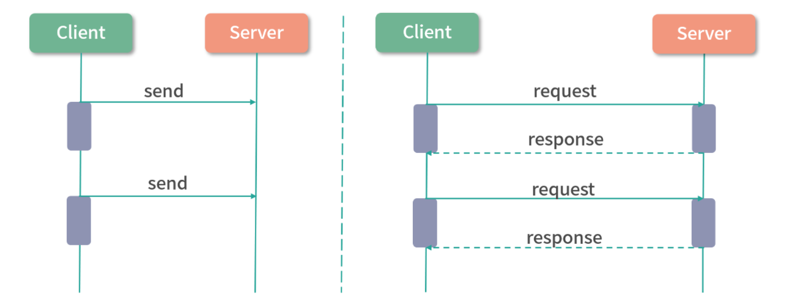
通过之前的分析我们知道，request() 方法会相应地创建 DefaultFuture 对象以及检测超时的定时任务，而 send() 方法则不会创建这些东西，它是直接将 Invocation 包装成 oneway 类型的 Request 发送出去。
在服务端的 HeaderExchangeHandler.receive() 方法中，会针对 oneway 请求和 twoway 请求执行不同的分支处理：
twoway 请求由 handleRequest() 方法进行处理，其中会关注调用结果并形成 Response 返回给客户端；
oneway 请求则直接交给上层的 DubboProtocol.requestHandler，完成方法调用之后，不会返回任何 Response。
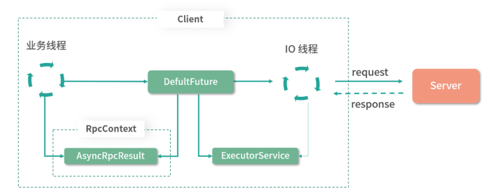
31在 Client 端发送请求时，首先会创建对应的 DefaultFuture（其中记录了请求 ID 等信息），然后依赖 Netty 的异步发送特性将请求发送到 Server 端。需要说明的是，这整个发送过程是不会阻塞任何线程的。之后，将 DefaultFuture 返回给上层，在这个返回过程中，DefaultFuture 会被封装成 AsyncRpcResult，同时也可以添加回调函数。2• 当 Client 端接收到响应结果的时候，会交给关联的线程池（ExecutorService）或是业务线程（使用 ThreadlessExecutor 场景）进行处理，得到 Server 返回的真正结果。拿到真正的返回结果后，会将其设置到 DefaultFuture 中，并调用 complete() 方法将其设置为完成状态。此时，就会触发前面注册在 DefaulFuture 上的回调函数，执行回调逻辑。
为了让业务逻辑能够无缝使用 Dubbo，就需要将业务逻辑与 Dubbo 内部概念打通，这就用到了动态代理的功能。
Proxy 动态代理层在 Dubbo 架构中的位置如下所示， Proxy 的具体代码实现位于 dubbo-rpc-api 模块中：
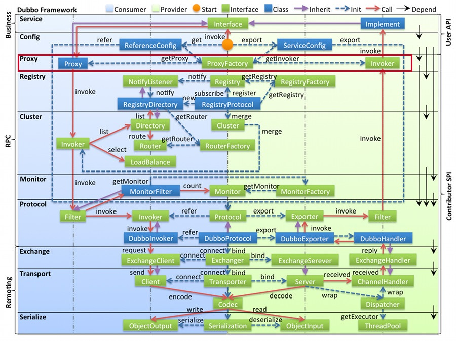
Consumer 在进行服务调用时，Dubbo 会通过 动态代理 将业务接口实现对象转化为相应的 Invoker 对象，然后在 Cluster 层、Protocol 层都会使用 Invoker；
Provider 在暴露服务时，也会有 Invoker 对象与业务接口实现对象之间的转换，这同样也是通过 动态代理 实现的。
实现动态代理的常见方案有：JDK 动态代理、CGLib 动态代理和 Javassist 动态代理。这些方案的应用都比较广泛，例如，Hibernate 底层使用了 Javassist 和 CGLib，Spring 使用了 CGLib 和 JDK 动态代理，MyBatis 底层使用了 JDK 动态代理和 Javassist。
从性能看，Javassist 与 CGLib 的实现方式相差无几，两者都比 JDK 动态代理性能要高一些，Dubbo 提供了两种方式来实现代理，分别是 JDK 动态代理和 Javassist。
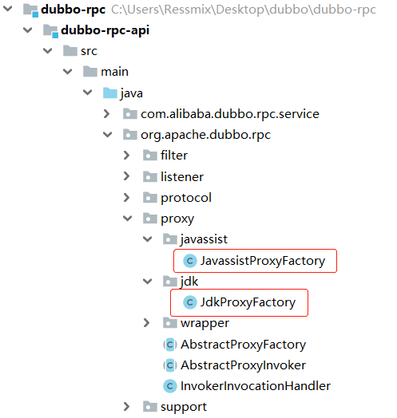
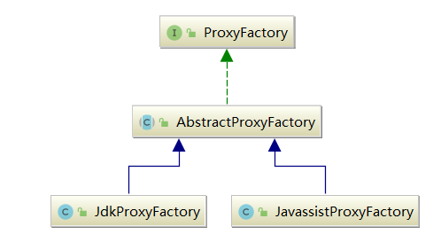
ProxyFactory 是一个 SPI 扩展接口，其中定义了两个核心方法：
getProxy() 方法：为 Invoker 对象创建代理对象；
getInvoker() 方法：将代理对象反向封装成 Invoker 对象。
121("javassist")2public interface ProxyFactory {3
4 ({PROXY_KEY})5 <T> T getProxy(Invoker<T> invoker) throws RpcException;6
7 ({PROXY_KEY})8 <T> T getProxy(Invoker<T> invoker, boolean generic) throws RpcException;9
10 ({PROXY_KEY})11 <T> Invoker<T> getInvoker(T proxy, Class<T> type, URL url) throws RpcException;12}AbstractProxyFactory 是代理工厂的抽象类 ，主要对需要代理的接口进行解析和预处理，真正的创建代理对象的动作由子类完成：
421// AbstractProxyFactory.java2
3public abstract class AbstractProxyFactory implements ProxyFactory {4
5 6 public <T> T getProxy(Invoker<T> invoker, boolean generic) throws RpcException {7 // 记录要代理的接口8 Set<Class<?>> interfaces = new HashSet<>();9
10 // 获取URL中interfaces参数指定的接口11 String config = invoker.getUrl().getParameter(INTERFACES);12 if (config != null && config.length() > 0) {13 // 按照逗号切分interfaces参数14 String[] types = COMMA_SPLIT_PATTERN.split(config);15 for (String type : types) {16 interfaces.add(ReflectUtils.forName(type));17 }18 }19
20 // 针对泛化接口的处理21 if (generic) {22 if (!GenericService.class.isAssignableFrom(invoker.getInterface())) {23 interfaces.add(com.alibaba.dubbo.rpc.service.GenericService.class);24 }25
26 try {27 // 从URL中获取interface参数指定的接口28 String realInterface = invoker.getUrl().getParameter(Constants.INTERFACE);29 interfaces.add(ReflectUtils.forName(realInterface));30 } catch (Throwable e) {31 }32 }33 // 获取Invoker中type字段指定的接口34 interfaces.add(invoker.getInterface());35 interfaces.addAll(Arrays.asList(INTERNAL_INTERFACES));36
37 // 调用抽象的getProxy()重载方法38 return getProxy(invoker, interfaces.toArray(new Class<?>[0]));39 }40
41 public abstract <T> T getProxy(Invoker<T> invoker, Class<?>[] types);42} JavassistProxyFactory 对 getProxy() 方法的实现比较简单，直接委托给了 dubbo-common 模块中的 Proxy 工具类来生成代理类。下面我就来深入分析 Proxy 生成代理类的全流程。
在 dubbo-common 模块中，Proxy.getProxy() 方法提供了动态创建代理类的核心实现。实现步骤：
查找缓存：查找 PROXY_CACHE_MAP 缓存，查找的结果有三个：
缓存中查找不到任务信息，则会在缓存中添加一个PENDING_GENERATION_MARKER占位符，当前线程后续创建生成代理类并最终替换占位符；
缓存中查找到了PENDING_GENERATION_MARKER 占位符，说明其他线程已经在生成相应的代理类了，当前线程会阻塞等待；
缓存中查找到完整代理类，则直接返回。
701// Proxy.java2
3// 第一层Key是ClassLoader对象，Value是被缓存的代理类的WeakReference，第二层Key是代理接口4private static final Map<ClassLoader, Map<String, Object>> PROXY_CACHE_MAP = new WeakHashMap<ClassLoader, Map<String, Object>>();5
6public static Proxy getProxy(ClassLoader cl, Class<?>... ics) {7
8 StringBuilder sb = new StringBuilder();9
10 // 循环处理每个接口类11 for (int i = 0; i < ics.length; i++) {12 String itf = ics[i].getName();13 // 传入的必须是接口类，否则直接报错14 if (!ics[i].isInterface()) {15 throw new RuntimeException(itf + " is not a interface.");16 }17
18 // 加载接口类，加载失败则直接报错19 Class<?> tmp = null;20 try {21 tmp = Class.forName(itf, false, cl);22 } catch (ClassNotFoundException e) {23 }24
25 if (tmp != ics[i]) {26 throw new IllegalArgumentException(ics[i] + " is not visible from class loader");27 }28 // 将接口类的完整名称用分号连接起来29 sb.append(itf).append(';');30 }31
32 // 接口列表将会作为第二层集合的Key33 String key = sb.toString();34
35 final Map<String, Object> cache;36 synchronized (PROXY_CACHE_MAP) {37 cache = PROXY_CACHE_MAP.computeIfAbsent(cl, k -> new HashMap<>());38 }39
40 Proxy proxy = null;41 synchronized (cache) {42 do {43 Object value = cache.get(key);44 if (value instanceof Reference<?>) {45 proxy = (Proxy) ((Reference<?>) value).get();46 // 查找到缓存的代理类47 if (proxy != null) {48 return proxy;49 }50 }51
52 // 获取到占位符53 if (value == PENDING_GENERATION_MARKER) {54 try {55 // 阻塞等待其他线程生成好代理类，并添加到缓存中56 cache.wait();57 } catch (InterruptedException e) {58 }59 } 60 // 设置占位符，由当前线程生成代理类61 else {62 cache.put(key, PENDING_GENERATION_MARKER);63 break;64 }65 }66 while (true);67 }68
69 //...动态生成代理类70}生成代理类：生成代理类的逻辑：
首先，调用 ClassGenerator.newInstance() 方法创建 ClassLoader 对应的 ClassPool。ClassGenerator 中封装了 Javassist 的基本操作，还定义了很多字段用来暂存代理类的信息，在其 toClass() 方法中会用这些暂存的信息来动态生成代理类；
接着，从 PROXY_CLASS_COUNTER 字段（AtomicLong类型）中获取一个 id 值，作为代理类的后缀，避免类名重复发生冲突；
接着，遍历全部接口，获取每个接口中定义的方法，对每个方法进行如下处理：
加入 worked 集合（Set<String> 类型）中，用来判重；
将方法对应的 Method 对象添加到 methods 集合（List<Method> 类型）中；
获取方法的参数类型以及返回类型，构建方法体以及 return 语句；
将构造好的方法添加到 ClassGenerator 中的 mMethods 集合中进行缓存。
然后，开始创建代理实例类（ProxyInstance）和代理类。这里我们先创建代理实例类，需要向 ClassGenerator 中添加相应的信息，例如，类名、默认构造方法、字段、父类以及一个 newInstance() 方法；
最后，在 finally 代码块中，释放 ClassGenerator 的相关资源，将生成的代理类添加到 PROXY_CACHE_MAP 缓存中保存，同时会唤醒所有阻塞在 PROXY_CACHE_MAP 缓存上的线程，重新检测需要的代理类是否已经生成完毕。
1181// Proxy.java2
3public static Proxy getProxy(ClassLoader cl, Class<?>... ics) {4 //...省略查找缓存的逻辑5
6 long id = PROXY_CLASS_COUNTER.getAndIncrement();7 String pkg = null;8 ClassGenerator ccp = null, ccm = null;9 try {10 ccp = ClassGenerator.newInstance(cl);11
12 Set<String> worked = new HashSet<>();13 List<Method> methods = new ArrayList<>();14
15 for (int i = 0; i < ics.length; i++) {16 if (!Modifier.isPublic(ics[i].getModifiers())) {17 String npkg = ics[i].getPackage().getName();18 // 如果接口不是public的，则需要保证所有接口在一个包下19 if (pkg == null) {20 pkg = npkg;21 } else {22 if (!pkg.equals(npkg)) {23 throw new IllegalArgumentException("non-public interfaces from different packages");24 }25 }26 }27 // 向ClassGenerator中添加接口28 ccp.addInterface(ics[i]);29
30 // 遍历接口中的每个方法31 for (Method method : ics[i].getMethods()) {32 String desc = ReflectUtils.getDesc(method);33 // 跳过已经重复方法以及static方法34 if (worked.contains(desc) || Modifier.isStatic(method.getModifiers())) {35 continue;36 }37 if (ics[i].isInterface() && Modifier.isStatic(method.getModifiers())) {38 continue;39 }40 // 将方法描述添加到worked这个Set集合中，进行去重41 worked.add(desc);42
43 int ix = methods.size();44 // 获取方法的返回值45 Class<?> rt = method.getReturnType();46 // 获取方法的参数列表47 Class<?>[] pts = method.getParameterTypes();48
49 // 创建方法体50 StringBuilder code = new StringBuilder("Object[] args = new Object[").append(pts.length).append("];");51 for (int j = 0; j < pts.length; j++) {52 code.append(" args[").append(j).append("] = ($w)$").append(j + 1).append(";");53 }54 code.append(" Object ret = handler.invoke(this, methods[").append(ix).append("], args);");55 // 生成return语句56 if (!Void.TYPE.equals(rt)) {57 code.append(" return ").append(asArgument(rt, "ret")).append(";");58 }59
60 // 将生成好的方法添加到ClassGenerator中缓存61 methods.add(method);62 ccp.addMethod(method.getName(), method.getModifiers(), rt, pts, method.getExceptionTypes(), code.toString());63 }64 }65
66 if (pkg == null) {67 pkg = PACKAGE_NAME;68 }69
70 // 生成并设置代理类类名71 String pcn = pkg + ".proxy" + id;72 ccp.setClassName(pcn);73
74 // 添加字段，一个是前面生成的methods集合，另一个是InvocationHandler对象75 ccp.addField("public static java.lang.reflect.Method[] methods;");76 ccp.addField("private " + InvocationHandler.class.getName() + " handler;");77
78 // 添加构造方法79 ccp.addConstructor(Modifier.PUBLIC, new Class<?>[]{InvocationHandler.class}, new Class<?>[0], "handler=$1;"); 80 ccp.addDefaultConstructor(); 81 Class<?> clazz = ccp.toClass();82 clazz.getField("methods").set(null, methods.toArray(new Method[0]));83
84 // 创建代理实例类的对象85 String fcn = Proxy.class.getName() + id;86 ccm = ClassGenerator.newInstance(cl);87 ccm.setClassName(fcn);88 ccm.addDefaultConstructor();89 ccm.setSuperClass(Proxy.class);90 ccm.addMethod("public Object newInstance(" + InvocationHandler.class.getName() + " h){ return new " + pcn + "($1); }");91 Class<?> pc = ccm.toClass();92 proxy = (Proxy) pc.newInstance();93 } catch (RuntimeException e) {94 throw e;95 } catch (Exception e) {96 throw new RuntimeException(e.getMessage(), e);97 } finally {98 // 释放ClassGenerator的相关资源99 if (ccp != null) {100 ccp.release();101 }102 if (ccm != null) {103 ccm.release();104 }105 synchronized (cache) {106 if (proxy == null) {107 cache.remove(key);108 } else {109 // 填充PROXY_CACHE_MAP缓存110 cache.put(key, new WeakReference<Proxy>(proxy));111 }112 // 唤醒所有阻塞在PROXY_CACHE_MAP上的线程113 cache.notifyAll();114 }115 }116 return proxy;117
118}无论是 Javassist 还是 JDK 生成的代理类，都会将方法委托给InvokerInvocationHandler来处理，其中维护了一个 Invoker 对象，也是前面 getProxy() 方法传入的第一个参数，这个 Invoker 不是一个简单的 DubboInvoker 对象，而是在 DubboInvoker 之上经过一系列装饰器修饰的 Invoker 对象。
在 InvokerInvocationHandler 的 invoke() 方法中，首先会针对特殊的方法进行处理，比如 toString()、$destroy() 等方法。之后，对于业务方法，会创建相应的 RpcInvocation 对象调用 Invoker.invoke() 方法发起 RPC 调用，具体实现如下：
341// InvokerInvocationHandler.java2
3public Object invoke(Object proxy, Method method, Object[] args) throws Throwable {4
5 // 对于Object中定义的方法，直接调用Invoker对象的相应方法即可6 if (method.getDeclaringClass() == Object.class) {7 return method.invoke(invoker, args);8 }9
10 String methodName = method.getName();11 Class<?>[] parameterTypes = method.getParameterTypes();12
13 if (parameterTypes.length == 0) { // 对$destroy等方法的特殊处理14 if ("$destroy".equals(methodName)) {15 invoker.destroy();16 return null;17 }18 }19
20 //...21
22 // 创建RpcInvocation对象，后面会作为远程RPC调用的参数23 RpcInvocation rpcInvocation = new RpcInvocation(method, invoker.getInterface().getName(), args);24 String serviceKey = invoker.getUrl().getServiceKey();25 rpcInvocation.setTargetServiceUniqueName(serviceKey);26
27 if (consumerModel != null) {28 rpcInvocation.put(Constants.CONSUMER_MODEL, consumerModel);29 rpcInvocation.put(Constants.METHOD_MODEL, consumerModel.getMethodModel(method));30 }31
32 // 调用invoke()方法发起远程调用，拿到AsyncRpcResult之后，调用recreate()方法获取响应结果(或是Future)33 return invoker.invoke(rpcInvocation).recreate();34}Invoker 是 Dubbo 的核心模型。在 Dubbo 中，Provider 的业务层实现会被包装成一个 ProxyInvoker，然后这个 ProxyInvoker 还会被 Filter、Listener 以及其他装饰器包装。ProxyFactory 的 getInvoker 方法就是将业务接口实现封装成 ProxyInvoker 入口。
我们先来看 JdkProxyFactory 中的实现。JdkProxyFactory 会创建一个匿名 AbstractProxyInvoker 的实现，其中的 doInvoke() 方法是通过 Java 原生的反射技术实现的，具体实现如下：
131// JdkProxyFactory.java2
3public <T> Invoker<T> getInvoker(T proxy, Class<T> type, URL url) {4 return new AbstractProxyInvoker<T>(proxy, type, url) {5 6 protected Object doInvoke(T proxy, String methodName,7 Class<?>[] parameterTypes, Object[] arguments) throws Throwable {8 // 使用反射方式查找methodName对应的方法，并进行调用9 Method method = proxy.getClass().getMethod(methodName, parameterTypes);10 return method.invoke(proxy, arguments);11 }12 };13}Invoker 接口的一个重要实现分支—— AbstractInvoker 以及它的一个实现 DubboInvoker。AbstractProxyInvoker 是 Invoker 接口的另一个实现分支，其实现类都是 ProxyFactory 实现中的匿名内部类。
在 AbstractProxyInvoker 实现的 invoke() 方法中，会将 doInvoke() 方法返回的结果封装成 CompletableFuture 对象，然后再封装成 AsyncRpcResult 对象返回，具体实现如下：
291// AbstractProxyInvoker.java2
3public Result invoke(Invocation invocation) throws RpcException {4
5 // 执行doInvoke()方法，调用业务实现6 Object value = doInvoke(proxy, invocation.getMethodName(), invocation.getParameterTypes(), invocation.getArguments());7
8 // 将value值封装成CompletableFuture对象9 CompletableFuture<Object> future = wrapWithFuture(value);10
11 // 再次转换，转换为CompletableFuture<AppResponse>类型12 CompletableFuture<AppResponse> appResponseFuture = future.handle((obj, t) -> {13 AppResponse result = new AppResponse();14
15 if (t != null) {16 if (t instanceof CompletionException) {17 result.setException(t.getCause());18 } else {19 result.setException(t);20 }21 } else {22 result.setValue(obj);23 }24 return result;25 });26
27 // 将CompletableFuture封装成AsyncRpcResult返回28 return new AsyncRpcResult(appResponseFuture, invocation);29}了解了 AbstractProxyInvoker 以及 JdkProxyFactory 返回的实现之后，来看下JavassistProxyFactory.getInvoker() 方法返回的实现。
首先该方法会通过 Wrapper 创建一个包装类，然后创建一个实现了 AbstractProxyInvoker 的匿名内部类，其 doInvoker() 方法会直接委托给 Wrapper 对象的 InvokeMethod() 方法，具体实现如下：
161// JavassistProxyFactory.java2
3public <T> Invoker<T> getInvoker(T proxy, Class<T> type, URL url) {4
5 // 通过Wrapper创建一个包装类对象6 final Wrapper wrapper = Wrapper.getWrapper(proxy.getClass().getName().indexOf('$') < 0 ? proxy.getClass() : type);7
8 // 创建一个实现了AbstractProxyInvoker的匿名内部类，其doInvoker()方法会直接委托给Wrapper对象的InvokeMethod()方法9 return new AbstractProxyInvoker<T>(proxy, type, url) {10 11 protected Object doInvoke(T proxy, String methodName,12 Class<?>[] parameterTypes, Object[] arguments) throws Throwable {13 return wrapper.invokeMethod(proxy, methodName, parameterTypes, arguments);14 }15 };16}Wrapper 类本身是抽象类，是对 Java 类的一种包装 。Wrapper 会从 Java 类中的字段和方法抽象出相应 propertyName 和 methodName，在需要调用一个字段或方法的时候，会根据传入的方法名和参数进行匹配，找到对应的字段和方法进行调用。
Wrapper.getWrapper() 方法会根据不同的 Java 对象，使用 Javassist 生成一个相应的 Wrapper 实现对象。
分析下 getWrapper() 方法实现：
首先检测该 Java 类是否实现了 DC 这个标识接口，在前面介绍 Proxy 抽象类的时候，我们提到过这个接口；
检测
WRAPPER_MAP集合（Map<Class<?>, Wrapper>类型）中是否缓存了对应的 Wrapper 对象，如果已缓存则直接返回，如果未缓存则调用 makeWrapper() 方法动态生成 Wrapper 实现类，以及相应的实例对象，并写入缓存中。651// Wrapper.java3// 第一步：public 字段会构造相应的 getPropertyValue() 方法和 setPropertyValue() 方法。5// 例如，有一个名为“name”的 public 字段，则会生成如下的代码：6public Object getPropertyValue(Object o, String n){7DemoServiceImpl w;9try{11w = ((DemoServiceImpl)$1);12}catch(Throwable e){13throw new IllegalArgumentException(e);14}15if( $2.equals(" if( $2.equals("name") ){17return ($w)w.name;18}19}20// 生成的setPropertyValue()方法22public void setPropertyValue(Object o, String n, Object v){23DemoServiceImpl w;25try{27w = ((DemoServiceImpl)$1);28}catch(Throwable e){29throw new IllegalArgumentException(e);30}31if( $2.equals("name") ){33w.name=(java.lang.String)$3; return;34}35}36// 第二步：处理 public 方法，这些 public 方法会添加到 invokeMethod 方法中。38// 以 Demo 示例（即 dubbo-demo 模块中的 demo ）中的 DemoServiceImpl 为例，生成的 invokeMethod() 方法实现如下：39public Object invokeMethod(Object o, String n, Class[] p, Object[] v) throws java.lang.reflect.InvocationTargetException {40org.apache.dubbo.demo.provider.DemoServiceImpl w;42try {43w = ((org.apache.dubbo.demo.provider.DemoServiceImpl) $1);44} catch (Throwable e) {45throw new IllegalArgumentException(e);46}47try {49// 省略getter/setter方法50if ("sayHello".equals($2) && $3.length == 1) {51return ($w) w.sayHello((java.lang.String) $4[0]);52}53if ("sayHelloAsync".equals($2) && $3.length == 1) {55return ($w) w.sayHelloAsync((java.lang.String) $4[0]);56}57} catch (Throwable e) {58throw new java.lang.reflect.InvocationTargetException(e);59}60throw new NoSuchMethodException("Not found method");62}63// 第三步：完成了上述 Wrapper 实现类相关信息的填充之后，makeWrapper() 方法会通过 ClassGenerator65// 创建 Wrapper 实现类，具体原理与前面 Proxy 创建代理类的流程类似，这里就不再赘述。Dubbo 中 Proxy 和 Wrapper 的重要性：
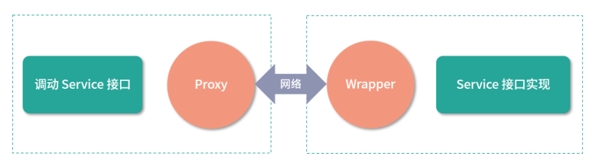
Consumer 端的 Proxy 底层屏蔽了复杂的网络交互、集群策略以及 Dubbo 内部的 Invoker 等概念，提供给上层使用的是业务接口。Provider 端的 Wrapper 是将个性化的业务接口实现，统一转换成 Dubbo 内部的 Invoker 接口实现。正是由于 Proxy 和 Wrapper 这两个组件的存在，Dubbo 才能实现内部接口和业务接口的无缝转换。
Filter 是扩展 Dubbo 功能的首选方案 ，并且 Dubbo 自身也提供了非常多的 Filter 实现来扩展自身功能。 Filter 链的组装逻辑设计得非常灵活，其中可以通过-配置手动剔除 Dubbo 原生提供的、默认加载的 Filter，通过default来代替 Dubbo 原生提供的 Filter，这样就可以很好地控制哪些 Filter 要加载，以及 Filter 的真正执行顺序。
Filter 在 Dubbo 架构中的位置如下图所示：
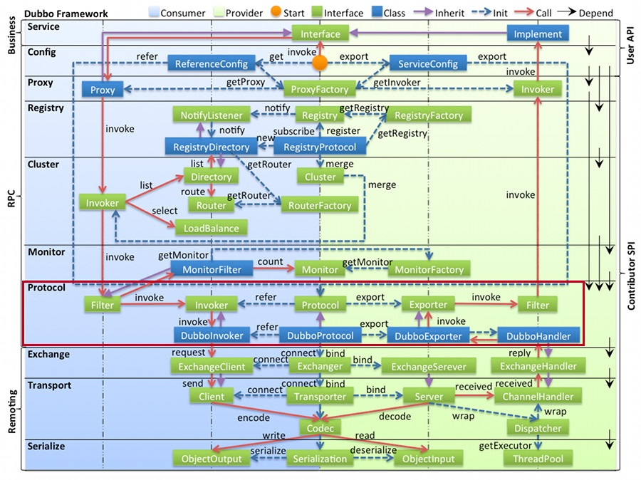
Dubbo PRC 层提供的各种内置Filter均位于 dubbo-rpc-api 模块的 org.apache.dubbo.rpc.filter包中：
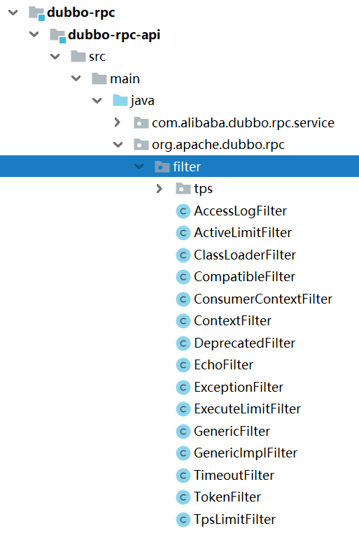
ConsumerContextFilter 是一个非常简单的 Consumer 端 的 Filter 实现，它会在当前的 RpcContext 中记录本地调用的一些状态信息（记录到 LOCAL 对应的 RpcContext 中）：包含调用相关的 Invoker、Invocation 以及调用的本地地址、远端地址信息等等。
321// ConsumerContextFilter.java2
3(group = CONSUMER, order = -10000)4public class ConsumerContextFilter implements Filter {5
6 7 public Result invoke(Invoker<?> invoker, Invocation invocation) throws RpcException {8 RpcContext context = RpcContext.getContext();9 context.setInvoker(invoker) // 记录Invoker10 .setInvocation(invocation) // 记录Invocation11 .setLocalAddress(NetUtils.getLocalHost(), 0) // 记录本地地址12 .setRemoteAddress(invoker.getUrl().getHost(), invoker.getUrl().getPort()) // 记录远端地址13 .setRemoteApplicationName(invoker.getUrl().getParameter(REMOTE_APPLICATION_KEY))14 .setAttachment(REMOTE_APPLICATION_KEY, invoker.getUrl().getParameter(APPLICATION_KEY));15 if (invocation instanceof RpcInvocation) {16 ((RpcInvocation) invocation).setInvoker(invoker);17 }18
19 // 检测是否超时20 Object countDown = context.get(TIME_COUNTDOWN_KEY);21 if (countDown != null) {22 TimeoutCountDown timeoutCountDown = (TimeoutCountDown) countDown;23 // 请求超时24 if (timeoutCountDown.isExpired()) {25 return AsyncRpcResult.newDefaultAsyncResult(new RpcException(RpcException.TIMEOUT_TERMINATE,26 "No time left for making the following call: " + invocation.getServiceName() + "."27 + invocation.getMethodName() + ", terminate directly."), invocation);28 }29 }30 return invoker.invoke(invocation);31 }32}这里使用的 TimeoutCountDown 对象用于检测当前调用是否超时，其中有三个字段：
timeoutInMillis（long 类型）：超时时间，单位为毫秒；
deadlineInNanos（long 类型）：超时的时间戳，单位为纳秒；
expired（boolean 类型）：标识当前 TimeoutCountDown 关联的调用是否已超时。
在 TimeoutCountDown.isExpire() 方法中，会比较当前时间与 deadlineInNanos 字段记录的超时时间戳。正如上面看到的逻辑，如果请求超时，则不再发起远程调用，直接让 AsyncRpcResult 异常结束。
ActiveLimitFilter 是一个用于控制 Consumer 并发调用量的Filter，也可以称为“客户端限流”。下面我们就来看下 ActiveLimitFilter 的具体实现：
491// ActiveLimitFilter.java2
3(group = CONSUMER, value = ACTIVES_KEY)4public class ActiveLimitFilter implements Filter, Filter.Listener {5
6 private static final String ACTIVELIMIT_FILTER_START_TIME = "activelimit_filter_start_time";7
8 9 public Result invoke(Invoker<?> invoker, Invocation invocation) throws RpcException {10 // 获得url对象11 URL url = invoker.getUrl();12 // 获得服务的方法名称13 String methodName = invocation.getMethodName();14 // 获取最大并发数15 int max = invoker.getUrl().getMethodParameter(methodName, ACTIVES_KEY, 0);16 // 获取该方法的状态信息17 final RpcStatus rpcStatus = RpcStatus.getStatus(invoker.getUrl(), invocation.getMethodName());18
19 // 尝试并发数加120 if (!RpcStatus.beginCount(url, methodName, max)) {21 long timeout = invoker.getUrl().getMethodParameter(invocation.getMethodName(), TIMEOUT_KEY, 0);22 long start = System.currentTimeMillis();23 long remain = timeout;24 synchronized (rpcStatus) {25 // 再次尝试并发数加126 while (!RpcStatus.beginCount(url, methodName, max)) {27 try {28 // 阻塞当前线程，等待并发数降低29 rpcStatus.wait(remain);30 } catch (InterruptedException e) {31 }32 // 检测是否超时33 long elapsed = System.currentTimeMillis() - start;34 remain = timeout - elapsed;35 if (remain <= 0) {36 throw new RpcException(RpcException.LIMIT_EXCEEDED_EXCEPTION,37 "Waiting concurrent invoke timeout in client-side for service: " +38 invoker.getInterface().getName() + ", method: " + invocation.getMethodName() +39 ", elapsed: " + elapsed + ", timeout: " + timeout + ". concurrent invokes: " +40 rpcStatus.getActive() + ". max concurrent invoke limit: " + max);41 }42 }43 }44 }45 // 添加一个attribute46 invocation.put(ACTIVELIMIT_FILTER_START_TIME, System.currentTimeMillis());47 return invoker.invoke(invocation);48 }49}
从 ActiveLimitFilter.invoke() 方法的代码中可以看到，其核心实现与 RpcStatus 对象密切相关。RpcStatus 中维护了两个集合，分别是：
SERVICE_STATISTICS集合（ConcurrentMap<String, RpcStatus>类型），这个集合记录了当前 Consumer 调用每个服务的状态信息，其中 Key 是 URL，Value 是对应的 RpcStatus 对象；
METHOD_STATISTICS集合（ConcurrentMap<String, ConcurrentMap<String, RpcStatus>>类型），这个集合记录了当前 Consumer 调用每个服务方法的状态信息，其中第一层 Key 是 URL ，第二层 Key 是方法名称，第三层是对应的 RpcStatus 对象。RpcStatus 中统计了很多调用相关的信息，核心字段有如下几个：
active（AtomicInteger 类型）：当前并发数；
total（AtomicLong 类型）：调用的总数；
failed（AtomicInteger 类型）：失败的调用数；
totalElapsed（AtomicLong 类型）：所有调用的总耗时；
failedElapsed（AtomicLong 类型）：所有失败调用的总耗时；
maxElapsed（AtomicLong 类型）：所有调用中最长的耗时；
failedMaxElapsed（AtomicLong 类型）：所有失败调用中最长的耗时；
succeededMaxElapsed（AtomicLong 类型）：所有成功调用中最长的耗时。
RpcStatus 中的 beginCount() 方法会在远程调用开始之前执行，其中会从
SERVICE_STATISTICS集合和METHOD_STATISTICS集合中获取服务和服务方法对应的 RpcStatus 对象，然后分别将它们的active字段加1，相关实现如下：271// RpcStatus.java2public static boolean beginCount(URL url, String methodName, int max) {4max = (max <= 0) ? Integer.MAX_VALUE : max;6// 获取服务对应的RpcStatus对象8RpcStatus appStatus = getStatus(url);9// 获取服务方法对应的RpcStatus对象11RpcStatus methodStatus = getStatus(url, methodName);12if (methodStatus.active.get() == Integer.MAX_VALUE) { // 并发数溢出13return false;14}15for (int i; ; ) {17i = methodStatus.active.get();18if (i + 1 > max) { // 并发数超过max上限，直接返回false19return false;20}21if (methodStatus.active.compareAndSet(i, i + 1)) { // CAS操作22break; // 更新成功后退出当前循环23}24}25appStatus.active.incrementAndGet(); // 单个服务的并发数加126return true;27}ActiveLimitFilter 在继承 Filter 接口的同时，还继承了
Filter.Listener这个内部接口，在其 onResponse() 方法的实现中，不仅会调用 RpcStatus.endCount() 方法完成调用监控的统计，还会调用 notifyFinish() 方法唤醒阻塞在对应 RpcStatus 对象上的线程，具体实现如下：151// ActiveLimitFilter.java2public void onResponse(Result appResponse, Invoker<?> invoker, Invocation invocation) {4// 获取调用的方法名称5String methodName = invocation.getMethodName();6URL url = invoker.getUrl();8int max = invoker.getUrl().getMethodParameter(methodName, ACTIVES_KEY, 0);9// 调用 RpcStatus.endCount() 方法完成调用监控的统计11RpcStatus.endCount(url, methodName, getElapsed(invocation), true);12// 调用 notifyFinish() 方法唤醒阻塞在对应 RpcStatus 对象上的线程14notifyFinish(RpcStatus.getStatus(url, methodName), max);15}
ContextFilter 是 Provider 端的一个 Filter 实现，它主要用来初始化 Provider 端的 RpcContext：
ContextFilter 首先会从 Invocation 中获取 Attachments 集合，并对该集合中的 Key 进行过滤，将 UNLOADING_KEYS 集合中的全部 Key 过滤掉；
之后，会初始化 RpcContext 以及 Invocation 的各项信息，例如，Invocation、Attachments、localAddress、remoteApplication、超时时间等；
最后，调用 Invoker.invoke() 方法执行 Provider 的业务逻辑。ContextFilter.Invoke() 方法的具体逻辑如下所示：
551// ContextFilter.java2
3public Result invoke(Invoker<?> invoker, Invocation invocation) throws RpcException {4
5 Map<String, Object> attachments = invocation.getObjectAttachments();6
7 //...8
9 // 获取RpcContext10 RpcContext context = RpcContext.getContext(); 11 // 设置RpcContext中的信息12 context.setInvoker(invoker) 13 .setInvocation(invocation)14 .setLocalAddress(invoker.getUrl().getHost(), invoker.getUrl().getPort());15
16 String remoteApplication = (String) invocation.getAttachment(REMOTE_APPLICATION_KEY);17
18 if (StringUtils.isNotEmpty(remoteApplication)) {19 context.setRemoteApplicationName(remoteApplication);20 } else {21 context.setRemoteApplicationName((String) context.getAttachment(REMOTE_APPLICATION_KEY));22 }23
24 // 设置超时时间25 long timeout = RpcUtils.getTimeout(invocation, -1);26 if (timeout != -1) { 27 context.set(TIME_COUNTDOWN_KEY, TimeoutCountDown.newCountDown(timeout, TimeUnit.MILLISECONDS));28 }29
30 // 向RpcContext中设置Attachments31 if (attachments != null) { 32 if (context.getObjectAttachments() != null) {33 context.getObjectAttachments().putAll(attachments);34 } else {35 context.setObjectAttachments(attachments);36 }37 }38
39 // 向Invocation设置Invoker40 if (invocation instanceof RpcInvocation) { 41 ((RpcInvocation) invocation).setInvoker(invoker);42 }43
44 try {45 // 在整个调用过程中，需要保持当前RpcContext不被删除，这里会将remove开关关掉，这样，removeContext()方法不会删除LOCAL RpcContext了46 context.clearAfterEachInvoke(false);47 return invoker.invoke(invocation);48 } finally {49 // 重置remove开关50 context.clearAfterEachInvoke(true);51 // 清理RpcContext，当前线程处理下一个调用的时候，会创建新的RpcContext52 RpcContext.removeContext(true);53 RpcContext.removeServerContext();54 }55}
ContextFilter 继承 Filter 接口的同时，还继承了
Filter.Listener这个内部接口。在 ContextFilter.onResponse() 方法中，会将SERVER_LOCAL这个 RpcContext 中的附加信息添加到 AppResponse 的attachments字段中，返回给 Consumer。51// ContextFilter.java2public void onResponse(Result appResponse, Invoker<?> invoker, Invocation invocation) {4appResponse.addObjectAttachments(RpcContext.getServerContext().getObjectAttachments());5}
AccessLogFilter 主要用于记录日志，它的主要功能是将 Provider 或者 Consumer 的日志信息写入文件中。AccessLogFilter 会先将日志消息放入内存日志集合中缓存，当缓存大小超过一定阈值之后，会触发日志的写入。若长时间未触发日志文件写入，则由定时任务定时写入。
AccessLogFilter.invoke() 方法的核心实现如下：
191// AccessLogFilter.java2
3public Result invoke(Invoker<?> invoker, Invocation inv) throws RpcException {4
5 // 获取ACCESS_LOG_KEY6 String accessLogKey = invoker.getUrl().getParameter(ACCESS_LOG_KEY);7
8 if (ConfigUtils.isNotEmpty(accessLogKey)) { 9
10 // 构造AccessLogData对象，其中记录了日志信息，例如，调用的服务名称、方法名称、version等11 AccessLogData logData = buildAccessLogData(invoker, inv);12
13 // 写日志14 log(accessLogKey, logData);15 }16
17 // 调用下一个Invoker18 return invoker.invoke(inv);19}
在
AccessLogFilter.log()方法中，会按照ACCESS_LOG_KEY的值，找到对应的AccessLogData集合，然后完成缓存写入；如果缓存大小超过阈值，则触发文件写入，具体实现如下：
// AccessLogFilter.java2private void log(String accessLog, AccessLogData accessLogData) {4// 根据ACCESS_LOG_KEY获取对应的缓存集合6Set<AccessLogData> logSet = LOG_ENTRIES.computeIfAbsent(accessLog, k -> new ConcurrentHashSet<>());7// 缓存大小未超过阈值9if (logSet.size() < LOG_MAX_BUFFER) {10logSet.add(accessLogData);11}12// 缓存大小超过阈值，触发缓存数据写入文件13else {14writeLogSetToFile(accessLog, logSet);15// 完成文件写入之后，再次写入缓存16logSet.add(accessLogData);17}18}在 writeLogSetToFile() 方法中，会按照
ACCESS_LOG_KEY的值将日志信息写入不同的日志文件中：
如果
ACCESS_LOG_KEY配置的值为 true 或 default，会使用 Dubbo 默认提供的统一日志框架，输出到日志文件中；如果
ACCESS_LOG_KEY配置的值不为 true 或 default，则ACCESS_LOG_KEY配置值会被当作 access log 文件的名称，AccessLogFilter 会创建相应的目录和文件，并完成日志的输出。351// AccessLogFilter.java2private void writeLogSetToFile(String accessLog, Set<AccessLogData> logSet) {4try {5// ACCESS_LOG_KEY配置值为true或是default6if (ConfigUtils.isDefault(accessLog)) {7processWithServiceLogger(logSet);8}9// ACCESS_LOG_KEY配置既不是true也不是default10else {11File file = new File(accessLog);12// 创建目录13createIfLogDirAbsent(file);14// 创建日志文件，这里会以日期为后缀，滚动创建15renameFile(file);16// 遍历logSet集合，将日志逐条写入文件17processWithAccessKeyLogger(logSet, file);18}19} catch (Exception e) {20logger.error(e.getMessage(), e);21}22}23private void processWithAccessKeyLogger(Set<AccessLogData> logSet, File file) throws IOException {25// 创建FileWriter，写入指定的日志文件26try (FileWriter writer = new FileWriter(file, true)) {27for (Iterator<AccessLogData> iterator = logSet.iterator(); iterator.hasNext();29iterator.remove()) {30writer.write(iterator.next().getLogMessage());31writer.write(System.getProperty("line.separator"));32}33writer.flush();34}35}在 AccessLogFilter 的构造方法中，会启动一个定时任务，定时调用上面介绍的
writeLogSetToFile()方法，定时写入日志，具体实现如下：121// AccessLogFilter.java2// 启动一个线程池4private static final ScheduledExecutorService LOG_SCHEDULED =5Executors.newSingleThreadScheduledExecutor(new NamedThreadFactory("Dubbo-Access-Log", true));6// 启动一个定时任务，定期执行writeLogSetToFile()方法，完成日志写入8public AccessLogFilter() {9LOG_SCHEDULED.scheduleWithFixedDelay(10this::writeLogToFile, LOG_OUTPUT_INTERVAL,11LOG_OUTPUT_INTERVAL, TimeUnit.MILLISECONDS);12}
ClassLoaderFilter 是 Provider 端的一个 Filter 实现，主要功能是切换类加载器。
在 ClassLoaderFilter.invoke() 方法中，首先获取当前线程关联的 contextClassLoader，然后将其 ContextClassLoader 设置为 invoker.getInterface().getClassLoader()，也就是加载服务接口类的类加载器；之后执行 invoker.invoke() 方法，执行后续的 Filter 逻辑以及业务逻辑；最后，将当前线程关联的 contextClassLoader 重置为原来的 contextClassLoader。ClassLoaderFilter 的核心逻辑如下：
141// ClassLoaderFilter.java2
3public Result invoke(Invoker<?> invoker, Invocation invocation) throws RpcException {4
5 ClassLoader ocl = Thread.currentThread().getContextClassLoader();6
7 // 更新当前线程绑定的ClassLoader 8 Thread.currentThread().setContextClassLoader(invoker.getInterface().getClassLoader());9 try {10 return invoker.invoke(invocation);11 } finally {12 Thread.currentThread().setContextClassLoader(ocl);13 }14}ExecuteLimitFilter 是 Dubbo 在 Provider 端的限流实现 ，与 Consumer 端的限流实现 ActiveLimitFilter 相对应。ExecuteLimitFilter 的核心实现与 ActiveLimitFilter类似，也是依赖 RpcStatus 的 beginCount() 方法和 endCount() 方法来实现 RpcStatus.active 字段的增减，具体实现如下：
171// ExecuteLimitFilter.java2
3public Result invoke(Invoker<?> invoker, Invocation invocation) throws RpcException {4
5 URL url = invoker.getUrl();6
7 String methodName = invocation.getMethodName();8 int max = url.getMethodParameter(methodName, EXECUTES_KEY, 0);9
10 // 尝试增加active的值，当并发度达到executes配置指定的阈值，则直接抛出异常11 if (!RpcStatus.beginCount(url, methodName, max)) {12 throw new RpcException("...");13 }14 invocation.put(EXECUTE_LIMIT_FILTER_START_TIME, System.currentTimeMillis());15 // 执行后续Filter以及业务逻辑16 return invoker.invoke(invocation); 17}ExecuteLimitFilter 同时还实现了 Filter 内部的 Listener 接口，在 onResponse() 方法和 onError() 方法中会调用 RpcStatus.endCount() 方法，减小 active 的值，同时完成对一次调用的统计，具体实现比较简单，这里就不再赘述。
TimeoutFilter 是 Provider 端另一个涉及超时时间的 Filter 实现，其 invoke() 方法实现比较简单，直接将请求转发给后续 Filter 处理。在 TimeoutFilter 对 onResponse() 方法的实现中，会从 RpcContext 中读取上述 TimeoutCountDown 对象，并检查此次请求是否超时。如果请求已经超时，则会将 AppResponse 中的结果清空，同时打印一条警告日志，具体实现如下：
181// TimeoutFilter.java2
3public void onResponse(Result appResponse, Invoker<?> invoker, Invocation invocation) {4
5 Object obj = RpcContext.getContext().get(TIME_COUNTDOWN_KEY);6
7 if (obj != null) {8 TimeoutCountDown countDown = (TimeoutCountDown) obj;9 // 检查结果是否超时10 if (countDown.isExpired()) { 11 // 清理结果信息12 ((AppResponse) appResponse).clear(); 13 if (logger.isWarnEnabled()) {14 logger.warn("...");15 }16 }17 }18}TpsLimitFilter 是 Provider 端对 TPS 限流的实现 。TpsLimitFilter 中维护了一个 TPSLimiter 接口类型的对象，其默认实现是 DefaultTPSLimiter，由它来控制 Provider 端的 TPS 上限值为多少。TpsLimitFilter.invoke() 方法的具体实现如下：
101// TpsLimitFilter.java2
3public Result invoke(Invoker<?> invoker, Invocation invocation) throws RpcException {4
5 // 超过限流之后，直接抛出异常6 if (!tpsLimiter.isAllowable(invoker.getUrl(), invocation)) {7 throw new RpcException("... ");8 }9 return invoker.invoke(invocation);10}TPSLimiter 接口中的核心是 isAllowable() 方法。在 DefaultTPSLimiter 实现中，使用ConcurrentHashMap（stats 字段）为每个 ServiceKey 维护了一个相应的 StatItem 对象；在 isAllowable() 方法实现中，会从 URL 中读取 tps 参数值（默认为 -1，即没有限流），对于需要限流的请求，会从 stats 集合中获取（或创建）相应 StatItem 对象，然后调用 StatItem 对象的isAllowable() 方法判断是否被限流，具体实现如下：
351// TpsLimitFilter.java2
3public boolean isAllowable(URL url, Invocation invocation) {4
5 int rate = url.getParameter(TPS_LIMIT_RATE_KEY, -1);6 long interval = url.getParameter(TPS_LIMIT_INTERVAL_KEY, DEFAULT_TPS_LIMIT_INTERVAL);7 String serviceKey = url.getServiceKey();8
9 // 需要限流，尝试从stats集合中获取相应的StatItem对象10 if (rate > 0) { 11 StatItem statItem = stats.get(serviceKey);12 // 查询stats集合失败，则创建新的StatItem对象13 if (statItem == null) { 14 stats.putIfAbsent(serviceKey, new StatItem(serviceKey, rate, interval));15 statItem = stats.get(serviceKey);16
17 } 18 // URL中参数发生变化时，会重建对应的StatItem19 else {20 if (statItem.getRate() != rate || statItem.getInterval() != interval) {21 stats.put(serviceKey, new StatItem(serviceKey, rate, interval));22 statItem = stats.get(serviceKey);23 }24 }25 return statItem.isAllowable(); 26 } 27 // 不需要限流，则从stats集合中清除相应的StatItem对象28 else { 29 StatItem statItem = stats.get(serviceKey);30 if (statItem != null) {31 stats.remove(serviceKey);32 }33 }34 return true;35}
在 StatItem 中会记录如下一些关键信息：
name（String 类型）：对应的 ServiceKey；
rate（int 类型）：一段时间内能通过的 TPS 上限；
token（LongAdder 类型）：初始值为 rate 值，每通过一个请求 token 递减一，当减为 0 时，不再通过任何请求，实现限流的作用；
interval（long 类型）：重置 token 值的时间周期，这样就实现了在 interval 时间段内能够通过 rate 个请求的效果。
StatItem 中 isAllowable() 方法的实现：
221// StatItem.java2public boolean isAllowable() {4long now = System.currentTimeMillis();6// 周期性重置token8if (now > lastResetTime + interval) {9token = buildLongAdder(rate);10// 记录最近一次重置token的时间戳11lastResetTime = now;12}13// 请求限流15if (token.sum() < 0) {16return false;17}18// 请求正常通过20token.decrement();21return true;22}
编写两个自定义的 Filter 实现类—— JarVersionConsumerFilter 和 JarVersionProviderFilter。
JarVersionConsumerFilter： 作用于Consumer端，获取服务接口所在 jar 包的版本，并作为 attachment 随请求发送到 Provider 端；
JarVersionProviderFilter： 作用于Provider端，统计请求中携带的 jar 包版本，并周期性打印。
首先，我们来看 JarVersionConsumerFilter 实现中的几个关键点：
JarVersionConsumerFilter 被 @Activate 注解修饰，其中的 group 字段值为 CommonConstants.CONSUMER，会在 Consumer 端自动激活，order 字段值为 -1 ，是最后执行的 Filter；
JarVersionConsumerFilter 中维护了一个 LoadingCache 用于缓存各个业务接口与对应 jar 包版本号之间的映射关系；
在 invoke() 方法的实现中，会通过 LoadingCache 查询接口所在 jar 包的版本号，然后记录到 Invocation 的 attachment 之中，发送到 Provider 端。
下面是 JarVersionConsumerFilter 的具体实现：
441// JarVersionConsumerFilter.java2
3(group = {CommonConstants.CONSUMER}, order = -1)4public class JarVersionConsumerFilter implements Filter {5
6 private static final String JAR_VERSION_NAME_KEY = "dubbo.jar.version";7
8 // 通过一个LoadingCache缓存各个Class所在的jar包版本9 private LoadingCache<Class<?>, String> versionCache = CacheBuilder.newBuilder()10 .maximumSize(1024).build(new CacheLoader<Class<?>, String>() {11 12 public String load(Class<?> key) throws Exception {13 return getJarVersion(key);14 }15 });16
17 18 public Result invoke(Invoker<?> invoker, Invocation invocation) throws RpcException {19 Map<String, String> attachments = invocation.getAttachments();20 String version = versionCache.getUnchecked(invoker.getInterface());21
22 // 添加版本号23 if (!StringUtils.isBlank(version)) { 24 attachments.put(JAR_VERSION_NAME_KEY, version);25 }26 return invoker.invoke(invocation);27 }28
29 // 读取Classpath下的"/META-INF/MANIFEST.MF"文件，获取jar包版本30 private String getJarVersion(Class clazz) {31 try (BufferedReader reader = new BufferedReader(new InputStreamReader(clazz.getResourceAsStream("/META-INF/MANIFEST.MF")))) { 32 String s = null;33 while ((s = reader.readLine()) != null) {34 int i = s.indexOf("Implementation-Version:");35 if (i > 0) {36 return s.substring(i);37 }38 }39 } catch (IOException e) {40 // 省略异常处理逻辑41 }42 return "";43 }44}JarVersionProviderFilter 的实现非常简单，它会读取请求中的版本信息，并将关联的计数器加1。另外，JarVersionProviderFilter 的构造方法中会启动一个定时任务，每隔一分钟执行一次，将统计结果打印到日志。
JarVersionProviderFilter 既然要运行在 Provider 端，那就需要将其 @Activate 注解的 group 字段设置为 CommonConstants.PROVIDER 常量。
291// JarVersionProviderFilter.java2
3(group = {CommonConstants.PROVIDER}, order = -1)4public class JarVersionProviderFilter implements Filter {5
6 private static final String JAR_VERSION_NAME_KEY = "dubbo.jar.version";7
8 private static final Map<String, AtomicLong> versionState = new ConcurrentHashMap<>();9
10 private static final ScheduledExecutorService SCHEDULED_EXECUTOR_SERVICE = Executors.newScheduledThreadPool(1);11
12 public JarVersionProviderFilter() { // 启动定时任务13 SCHEDULED_EXECUTOR_SERVICE.schedule(() -> {14 for (Map.Entry<String, AtomicLong> entry : versionState.entrySet()) {15 System.out.println(entry.getKey() + ":" + entry.getValue().getAndSet(0)); // 打印日志并将统计数据重置16 }17 }, 1, TimeUnit.MINUTES);18 }19
20 21 public Result invoke(Invoker<?> invoker, Invocation invocation) throws RpcException {22 String versionAttachment = invocation.getAttachment(JAR_VERSION_NAME_KEY);23 if (!StringUtils.isBlank(versionAttachment)) {24 AtomicLong count = versionState.computeIfAbsent(versionAttachment, v -> new AtomicLong(0L));25 count.getAndIncrement(); // 递增该版本的统计值26 }27 return invoker.invoke(invocation);28 }29}
最后，我们需要在 Provider 项目的
/resources/META-INF/dubbo目录下添加一个 SPI 配置文件，文件名为org.apache.dubbo.rpc.Filter，内容如下：11version-provider = org.apache.dubbo.demo.provider.JarVersionProviderFilter
同样，也需要在 Consumer 项目相同位置添加相同的 SPI 配置文件（文件名称也相同），具体内容如下：
11version-consumer=org.apache.dubbo.demo.consumer.JarVersionConsumerFilter